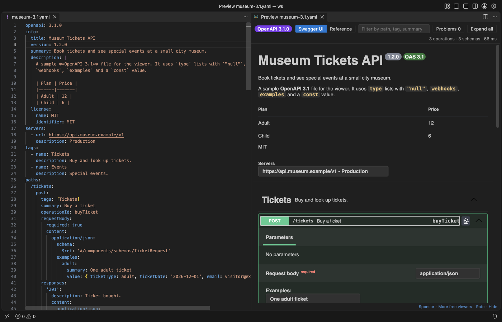

Open files in VS Code and Cursor / Code and APIs
Preview a Swagger or OpenAPI file in VS Code
VS Code shows an OpenAPI file as plain YAML or JSON. Install the free Swagger Viewer & OpenAPI Viewer by Zovo, open the spec and press Shift+Alt+P. A Swagger UI preview opens beside the editor and updates while you type. It reads OpenAPI 3.1, 3.0 and Swagger 2.0, follows $ref links to other files in your workspace, and needs no local server.
Free, MIT license. Extension ID zovo.swagger-openapi-viewer, version 0.1.1. Needs VS Code 1.90.0 or newer.

Steps in VS Code
- Install Swagger Viewer & OpenAPI Viewer from the Marketplace, or press Ctrl+P (Cmd+P on macOS) and run
ext install zovo.swagger-openapi-viewer. - Open a YAML or JSON file that starts with
openapi:orswagger:. - Click the preview button at the top right of the editor, or press Shift+Alt+P. You can also right-click the file in the Explorer and pick Open Preview to the Side.
- Switch between Swagger UI and the Reference layout in the toolbar. The Reference layout shows the operation list, the details and a curl line with examples.
- Press
/to filter by path, tag, summary or operationId. Click a problem in the Problems list to jump to the line.
Steps in Cursor, Windsurf or VSCodium
- Open the Extensions view with Ctrl+Shift+X (Cmd+Shift+X on macOS).
- Search for
zovo.swagger-openapi-viewerand click Install. Cursor, Windsurf and VSCodium install from Open VSX, where it is published aszovo/swagger-openapi-viewer. - If your editor has no gallery, download the .vsix from the Open VSX page and run "Extensions: Install from VSIX...".
- Then use it the same way as in VS Code.
What Swagger Viewer & OpenAPI Viewer handles
- Relative
$reflinks to other files, such aspaths/pets.yaml. A ref that cannot be loaded is listed with the file name and the reason. - OpenAPI 3.1 webhooks,
type: [string, "null"],constandexamples. - Problems with line numbers: missing path parameters, duplicate operationId, undefined security schemes, refs that point nowhere and YAML or JSON syntax errors.
- Large specs. The 11 MB GitHub REST API description with 1,272 operations opens in a few seconds, and typing stays smooth.
What it does not do
- The checks cover common mistakes. It is not a full JSON Schema validation of the spec.
- Try it out is off by default. When you turn it on, it does not send file uploads (multipart).
- Remote
http(s)refs load only after you click Load remote refs, once per click.
In JetBrains IDEs (IntelliJ IDEA, PyCharm, WebStorm, CLion and others)
- No Zovo plugin for JetBrains IDEs. This viewer is for VS Code and editors built on it. For IntelliJ IDEA, WebStorm, PyCharm and the other JetBrains IDEs, use one of the plugins below.
- OpenAPI Specifications. 10.9 million downloads. Its description says it supports OpenAPI 3, Swagger 2 and AsyncAPI 2 files in YAML and JSON, with validation by JSON Schema.
- Zalando OpenAPI Editor. 722,562 downloads. Its description says it helps you edit OpenAPI and Swagger specification files.
Other options
- Swagger Viewer (
Arjun.swagger-viewer, 1 million installs, on Open VSX). The most installed one. Its own description: "Swagger Viewer lets you preview and validate Swagger 2.0 and OpenAPI files as you type in Visual Studio Code." - OpenAPI Viewer (
AndrewButson.vscode-openapi-viewer, 43,810 installs, on Open VSX). Its own description: "Live, interactive preview of OpenAPI 3.2, 3.1, 3.0 and Swagger 2.0 specifications in JSON or YAML". It lists OpenAPI 3.2, which ours does not claim. - reDoc viewer (
Atif.vs-redoc-viewer, 17,037 installs, not on Open VSX). Pick this one if you want the Redoc look instead of Swagger UI. Its own description: "reDoc viewer lets you preview and validate OpenAPI files as you type in Visual Studio Code."
Install counts and Open VSX status were checked on 9 November 2026. Descriptions in quotes are the extensions' own.
Questions
Does it work with specs split over many files?
Yes. Relative $ref links are read from your workspace and joined into one document. Refs outside the workspace, absolute paths and file: URLs are not read.
Does the preview send requests to my API?
No. Try it out is off by default. If you turn on openapiViewer.tryItOut, VS Code asks you to confirm each server before a request goes out.
Do I need an account or an API key?
No. It needs no sign-in, no local server and no port. The preview makes no network requests unless you click Load remote refs.
More about Swagger Viewer & OpenAPI Viewer
Read the Swagger Viewer & OpenAPI Viewer page for every feature and setting, or the source code on GitHub.
Related guides
- Open a SARIF file in VS Code
- Preview an HTML file with its CSS and images in VS Code
- Test a regex in VS Code
- Take a screenshot of code in VS Code
Support this work
If this extension saves you time, you can support the work on GitHub Sponsors. Monthly tiers start at $5, and one-time tiers start at $15. Sponsorship is optional, and the tool works the same without it.
Need your format supported?
Open a format request with a sample file, and I reply there whether it can be done. For USD 299 once, through this GitHub Sponsors tier, I add your file format or a missing feature to this extension, with tests, within 7 days.